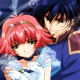

INFO
» basics
» Life
» Love
» compare
» family
» friends
» voice
» quotes
|
MEDIA
» anime
» manga
» screens
» wall
» music
» lyrics
» fanart
|
SITE
» updates
» links out
» link ODT
» credits
» contact
|

|
|

Information -- » Beautiful Stranger
In this section, we will not only discuss Himeno's obvious relationship with Hayate, but also the possiblity of Himeno x Sasame, since it's more apparent in the manga.
Himeno's significant other is without a doubt, Hayate, the Liefe Knight of Wind. Their first encounter was pretty cute, although they didn't start off on the right foot with each other. Himeno had decided to take a shortcut through the bushes for a quicker route to school. Hayate, who was coincidentally passing by, hears the russling of leaves and thinks it's a mayochuu (demon bug). As he gets closer to the bushes, Himeno lunges out without and Hayate has no time to step out of the way. Yes, the result is a rather heavy Himeno on top of a dazed Hayate. Himeno is at once infatuated with this handsome young man, but Hayate wasn't so friendly. Now in this "ideal" situation, you'd think that Hayate would help her up and ask if she was hurt anywhere (and Himeno even says this), but Hayate literally shoves Himeno off of him while he insults her common sense and her weight. A heated (but rather funny) argument arises fast between the two and Hayate makes a grab for her in the process. Himeno, thinking he was a pervert, thrusts his hand away and in doing so, activated Hayate's charm on his wrist, signifying that she was Pretear. Himeno definitely lost her infatuation with him after this incident, and almost every time he appeared, she would hit hard first and ask questions later.
It was quite an unpleasant experience for Himeno the first time she pret with Hayate. The very thought of her and the knight's soul becoming one gave her the chills, and Hayate wasn't too patient with her. Himeno manages to kill off the mayochuu, but in the process Hayate was injured multiple times. Dispite Himeno's dislike towards Hayate, she stilled worried about his wounds. Hayate, on the other hand, maintains a certain rudeness towards her, one that we don't see him exhibiting on anyone else. Hayate is probably the coldest to Himeno in the beginning, and that's probably most likely due to his past with the previous Pretear. Hayate doesn't want to repeat his 'sin' again with this Pretear, so instead he pushes Himeno away and makes it clear that he doesn't like her, so that she won't fall for him. But, as we see, that doesn't work. =P Hayate and Himeno get distressed the most over each other. Hayate constantly insults Himeno and Himeno is constantly twitching with anger. But after Himeno's first success on the kendama, Hayate is seen on the rooftop smiling down at Himeno's outburst of triumph. Earlier in the day was the first time that Hayate had finally admitted that she was a foolish and angry Pretear. xD
After they've sort of accepted each other, Hayate started appearing more and more often with Himeno. Himeno's father recruited him as a handyman for himself, so Hayate's seen around the Awayuki mansion a lot. Hayate also developed a nickname for Himeno, "Tulip head,"because her hair looked so much like an upturned tulip. After Himeno experienced Saihi's warning in a dream, she jumps into Hayate's arms out of fright, regains her full conciousness and punches him. xD There are little bits of 'hated love' going on throughout the show, since neither of them will admit their feelings. But secretly, Hayate would guard Himeno by himself and without telling anyone. It wasn't until half way through the series will Hayate actually be seen worrying about Himeno. Since then, their relationship has only gone uphill. This would later cause a problem for them because of Takako's love for Hayate. But Hayate stays true to Himeno and would sacrifice himself for Himeno's safety. The ending kiss of the two was quite fairy-tale like. xD Himeno was thought to be dead until Hayate bends to kiss her. She wakes up afterwards and they live happily ever after. =P
^ top
|